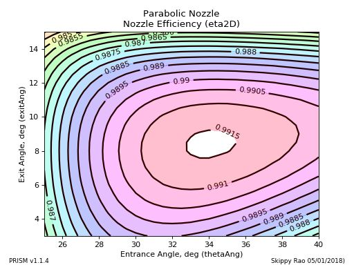
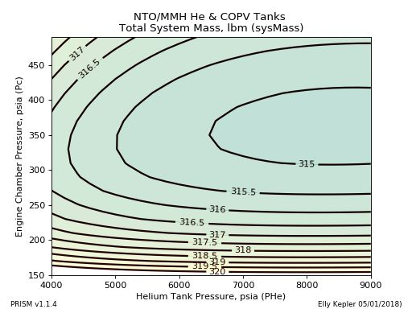
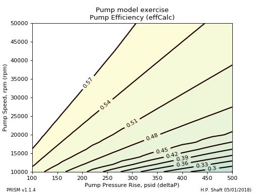
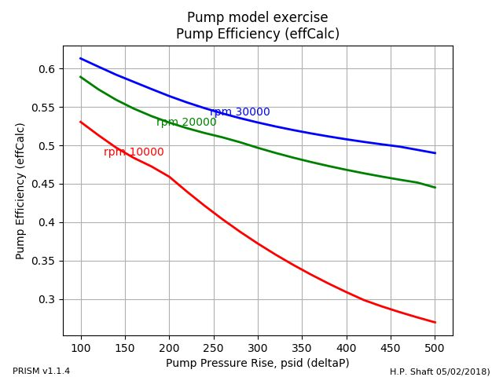
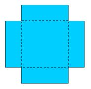

Plot Types¶
2D Plot¶
A 2D Plot is the most simple of all the plots. The plot below displays the tankage and pressurant mass of a helium pressurized all-titanium bipropellant system. The command to create the plot is shown below:
make2DPlot(S, sysParam="sysMass", desVar="PHe")
{kind=link}
2D Parametric Plot¶
2D Parametric Plots are given an independent desVar and an output variable sysParam. As desVar varies over its design range, sysParam is calculated for each of the values of an input paramVar.
The example below calculates a Grain Surface Area over a range of Percent Burned where the Web Thickness can be any value in the list 1.0,2.0,3.0,4.0,5.0:
make2DParametricPlot(S, sysParam="SA", desVar="pcentBurned",
paramVar=["web",1.0,2.0,3.0,4.0,5.0])
{kind=link}
This second example of a 2D Parametric Plot shows how to add a design point using ptData and how to make the image file larger or smaller by changing dpi. This plot shows how the Mixture Ratio of a particular pressure fed engine varies as the Oxidizer Tank Pressure varies:
make2DParametricPlot(S, sysParam="MR", desVar="PengInOx",
paramVar=["PengInFuel",250.0,275.0,300.0,325.,350.], dpi=100,
ptData=[[277.7],[1.85]])
{kind=link}
Sensitivity Plot¶
A Sensitivity Plot displays how sensitive an output parameter's value is to the values of various input parameters. It investigates each input parameter by holding all inputs at their design point value except for the one under investigation. By varying that one input parameter over it's entire allowable range, an insight to sensitivity can be gained.
Typically this is done after a call to the optimizer in order to verify that a good optimum was found.
Notice that each input's design point is indicated by a green vertical bar and that each variable's design range is indicated by the x axis.
The line of code below is used to create the sensitivity plot. The y axis is defined by the figureOfMerit input. Any number of input parameters can be placed on the plot with the desVars input. The case below shows the sensitivity of a nozzle efficiency to the entrance and exit angles:
makeSensitivityPlot(S,figureOfMerit="eta2D", desVars=["thetaAng","exitAng"])

Sensitivity plots for optimization problems also can include constraints on any of the output parameters. The plot below shows an example of a sensitivity plot where constraint violations are identified.
Note
All plot types show any constraint violations in the manner indicated below.
{kind=link}
Contour Plot¶
Contour Plots display contours of constant value of output/result parameters. The information on a contour plot is similar to the information on a 2D Parametric Plot but typically requires more model evaluations than a 2D parametric plot.
In some cases, however, the contour plot can give better insight into the math model.
The command to create a contour plot is shown below. The contours themselves are identified with the sysParam input. The input/design variables with the input desVars. Note that in this case, the step size between contours(interval) and colorMap are called out. (see: Colormaps):
makeContourPlot(S, sysParam="eta2D", desVars=["thetaAng","exitAng"],
interval=0.0005, colorMap="hsv")
The two contour plots below, show the existence and relative size of the "islands" of optimum design.
 {kind=link}
{kind=link}
There are situations in which the 2D Parametric Plot may be preferred either for aesthetic or technical reasons. The plot below shows contours of constant pump efficiency, that could just as well be displayed with a 2D Parametric Plot.
 {kind=link}
{kind=link}
Carpet Plot¶
A Carpet Plot is unique in that the calculated, dependent variables are on the axes. Each inner curve represents an input value and the axes represent the calculated output variables.
Note
A Carpet Plot can take the place of two 2D plots in some cases
As an example, take a rectangular sheet of material that is W x L and make a box by cutting off an h x h square from all four corners (see image). Then fold the sides up to make an open box.
{kind=link}
The carpet plot below, shows how the mass and volume of the box vary as different values of L and h are used. (W is held constant at 10):
makeCarpetPlot(S, sysParam="Volume",
desVarL=[["hbox",1,1.3,1.6,2.5,3.3],["Lmatl",20,25,30]],
xResultVar="boxMass")
{kind=link}
MassItem Sensitivity Plot¶
A MassItem Sensitivity Plot shows the mass of each MassItem on a bar chart for three values of the selected independent variable; the minimum, design and maximum values.
The plots below, for example, show stage item masses on charts both with and without propellant included.:
makeMassItemSensitivityPlot(S, desVar="Pc", excludePropellant=0, showDelta=0)
makeMassItemSensitivityPlot(S, desVar="Pc", excludePropellant=1, showDelta=0)
{kind=link}
{kind=link}
{kind=link}